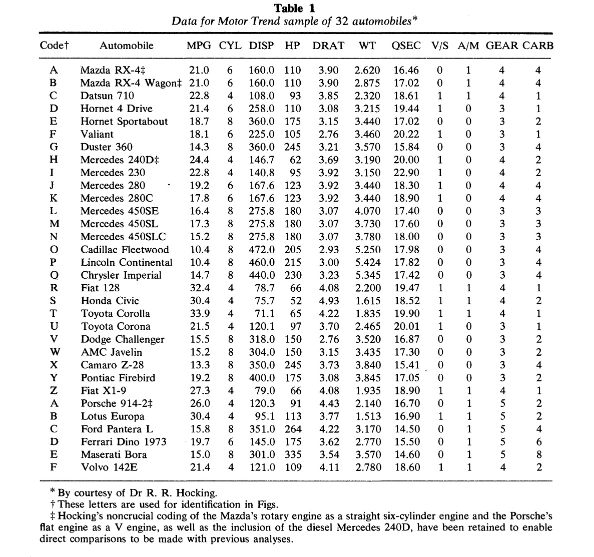
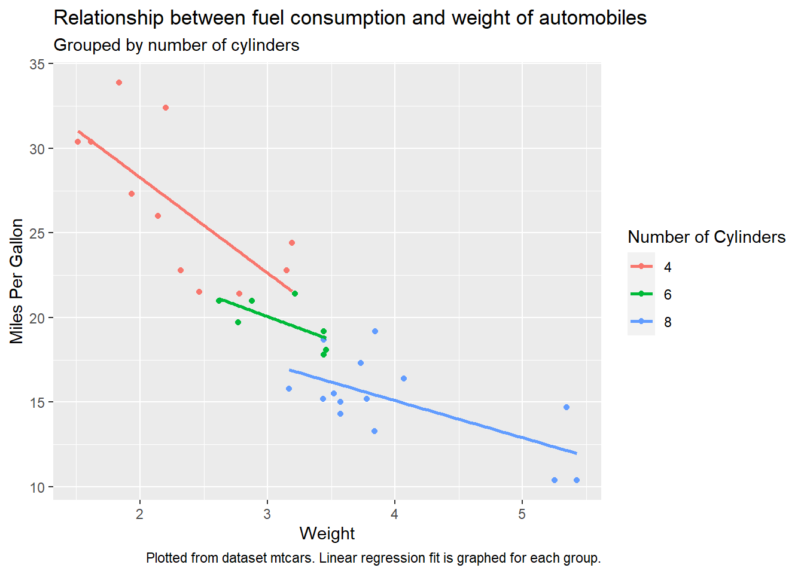
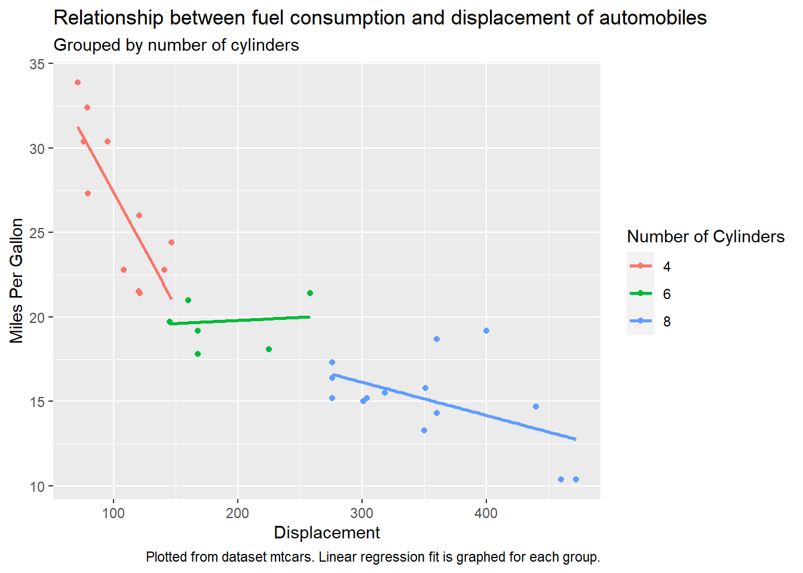
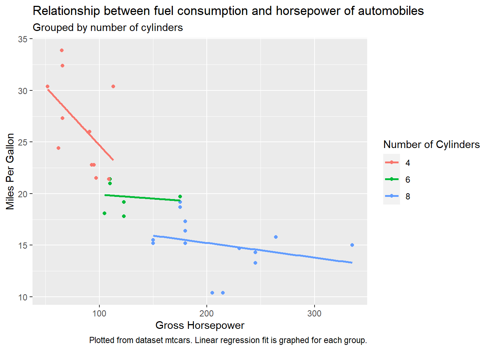
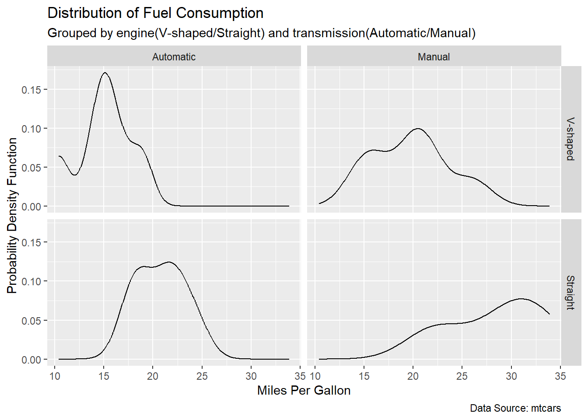

We hereby analyze the dataset mtcars, which contains data extracted from 1974 Motor Trend US magazine containing fuel consumption and aspects of automobile design and performace for 32 automobiles.
The question we aim to answer: We aim to find the relationship between the fuel consumption of cars, measured with miles per US Gallon(MPG), and the design of automobiles.
Tip
Note that larger values of miles per gallon indicates lower consumption of fuel over the same distance. The inverse of that value can be regarded as the fuel efficiency of the automobiles.
Intended Audience: This analysis is meant for statisticians as well as people interested in automobiles.
Data Source: The dataset is extracted from 1974 Motor Trend US magazine containing fuel consumption and aspects of automobile design and performace for 32 automobiles. It is available in the datasets package which is a built-in package in R programming language. A reference to the data is Henderson and Velleman (1981), Building multiple regression models interactively. Biometrics, 37, 391–411.(doi: https://doi.org/10.2307/2530428)link to doi(Henderson and Velleman 1981)(n.d.)

Table of the original data cropped from Henderson, 1981
Data Dictionary: The data contains 32 observations with 11 numeric variables. A link to a description of the data with data dictionary is here (https://www.rdocumentation.org/packages/datasets/versions/3.6.2/topics/mtcars)
Exploratory Data Analysis
data("mtcars")library(dplyr)library(tidyr)library(ggplot2)# Recode the data for claritymtcars_df <- mtcars %>%mutate(vs=factor(vs,0:1,c("V-shaped","Straight")),am=factor(am,0:1,c("Automatic","Manual")) ) %>%rename(weight=wt,engine=vs,transmission=am)knitr::kable(head(mtcars_df[,c(1,8,9)]))
mpg
engine
transmission
Mazda RX4
21.0
V-shaped
Manual
Mazda RX4 Wag
21.0
V-shaped
Manual
Datsun 710
22.8
Straight
Manual
Hornet 4 Drive
21.4
Straight
Automatic
Hornet Sportabout
18.7
V-shaped
Automatic
Valiant
18.1
Straight
Automatic
# Average MPG for different number of cylindersknitr::kable(mtcars_df %>%group_by(cyl) %>%summarise(avg_mpg=mean(mpg),count=n()))
cyl
avg_mpg
count
4
26.66364
11
6
19.74286
7
8
15.10000
14
# Average MPG for engine and transmission categoryknitr::kable(mtcars_df %>%group_by(engine,transmission) %>%summarise(avg_mpg=mean(mpg),count=n()))
`summarise()` has grouped output by 'engine'. You can override using the
`.groups` argument.
engine
transmission
avg_mpg
count
V-shaped
Automatic
15.05000
12
V-shaped
Manual
19.75000
6
Straight
Automatic
20.74286
7
Straight
Manual
28.37143
7
# Graphing MPG vs weight, displacement and horsepower grouped by cylinder numbermtcars_df %>%mutate(cyl=factor(cyl)) %>%ggplot(aes(x=weight,y=mpg,group=cyl,col=cyl)) +geom_point() +geom_smooth(formula=y~x,method='lm',se=FALSE) +xlab("Weight") +ylab("Miles Per Gallon") +labs(title="Relationship between fuel consumption and weight of automobiles",subtitle="Grouped by number of cylinders",caption="Plotted from dataset mtcars. Linear regression fit is graphed for each group.",color="Number of Cylinders")

mtcars_df %>%mutate(cyl=factor(cyl)) %>%ggplot(aes(x=disp,y=mpg,group=cyl,col=cyl)) +geom_point() +geom_smooth(formula=y~x,method='lm',se=FALSE) +xlab("Displacement") +ylab("Miles Per Gallon") +labs(title="Relationship between fuel consumption and displacement of automobiles",subtitle="Grouped by number of cylinders",caption="Plotted from dataset mtcars. Linear regression fit is graphed for each group.",color="Number of Cylinders")

mtcars_df %>%mutate(cyl=factor(cyl)) %>%ggplot(aes(x=hp,y=mpg,group=cyl,col=cyl)) +geom_point() +geom_smooth(formula=y~x,method='lm',se=FALSE) +xlab("Gross Horsepower") +ylab("Miles Per Gallon") +labs(title="Relationship between fuel consumption and horsepower of automobiles",subtitle="Grouped by number of cylinders",caption="Plotted from dataset mtcars. Linear regression fit is graphed for each group.",color="Number of Cylinders")

# Density plot of MPG grouped by Engine and Transmissionmtcars_df %>%ggplot(aes(x=mpg)) +geom_density() +facet_grid(rows=vars(engine),cols=vars(transmission)) +xlab("Miles Per Gallon") +ylab("Probability Density Function") +labs(title="Distribution of Fuel Consumption",subtitle="Grouped by engine(V-shaped/Straight) and transmission(Automatic/Manual)",caption="Data Source: mtcars")

Note
We can see that fewer cylinders are associated with both lower displacement, lower weight, higher MPG and lower gross horsepower. So cylinder number is a confounder since it relates with both the outcome of interest(in this case, MPG) and other independent variables, and a reasonable thing to do is to include cylinder number into statistical models.
Statistical Modelling:
We now fit a linear model to find the relationship between MPG and other characteristics of automobiles, and then attempt to select a subset of variables by stepwise selection(Marhuenda, Morales, and del Carmen Pardo 2014), in order to simplify the model without losing too much accuracy. Akaike’s Information Criteria is used to represent the model’s accuracy while penalizing more complex models.
# Fit the simplified subset model summary(lm(mpg~weight+qsec+transmission,mtcars_df))
Call:
lm(formula = mpg ~ weight + qsec + transmission, data = mtcars_df)
Residuals:
Min 1Q Median 3Q Max
-3.4811 -1.5555 -0.7257 1.4110 4.6610
Coefficients:
Estimate Std. Error t value Pr(>|t|)
(Intercept) 9.6178 6.9596 1.382 0.177915
weight -3.9165 0.7112 -5.507 6.95e-06 ***
qsec 1.2259 0.2887 4.247 0.000216 ***
transmissionManual 2.9358 1.4109 2.081 0.046716 *
---
Signif. codes: 0 '***' 0.001 '**' 0.01 '*' 0.05 '.' 0.1 ' ' 1
Residual standard error: 2.459 on 28 degrees of freedom
Multiple R-squared: 0.8497, Adjusted R-squared: 0.8336
F-statistic: 52.75 on 3 and 28 DF, p-value: 1.21e-11
Note
From the model, we see that only weight appears weakly significant(we use “weakly” since common choices of significance level is 0.05 or lower) and other variables all appear non-significant. But after using stepwise selection, everything except weight, qsec and transmission is removed one by one, making the rest of the variables all significant. And note that the simplified model explained 85% of the variability in MPG, whereas the full model explained 87%, which is not really a big loss in accuracy.
Summary:
Exploratory analysis showed that manual transmission, straight engines and smaller number of cylinders are associated with higher MPG and thus lower fuel consumption. The graph of the data suggests correlation among MPG, cylinder numbers and other variables, suggesting strong confounding in the data. After fitting the linear model and performing variable selection, weight, quarter-mile time and transmission type remained as the significant predictors. When other variables are fixed, for any 1000 pounds increased in weight, MPG decreases by 3.9 by average. Cars with manual transmission traverses 2.94 miles per gallon more than those with automatic transmission with other characteristics being the same. Any unit increase in quarter-mile time is associated with 1.22 increase in MPG when weight and transmissions are fixed.
Henderson, Harold V., and Paul F. Velleman. 1981. “Building Multiple Regression Models Interactively.”Biometrics 37 (2): 391–411. http://www.jstor.org/stable/2530428.
Marhuenda, Yolanda, Domingo Morales, and María del Carmen Pardo. 2014. “Information Criteria for Fay–Herriot Model Selection.”Computational Statistics & Data Analysis 70: 268–80. https://doi.org/https://doi.org/10.1016/j.csda.2013.09.016.